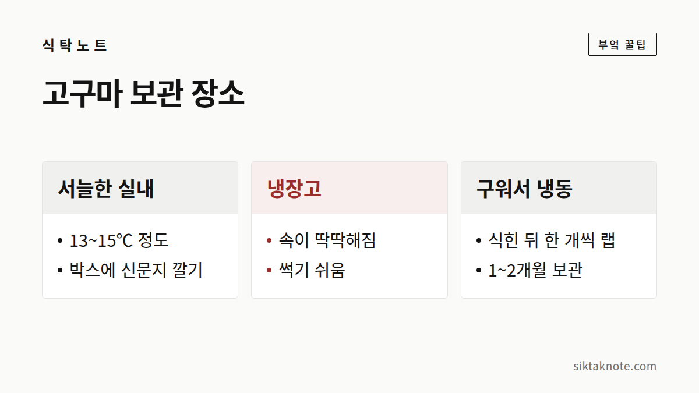

고구마 보관하는 법 — 냉장고에 넣으면 안 되는 이유

3줄 요약
- 생고구마는 냉장고 대신 햇빛 안 드는 서늘한 실내에 두는 게 편해요.
- 씻지 않은 채로 신문지에 한 개씩 싸서 박스에 담아 두면 좋아요.
- 쓴맛이 나거나 검은 반점이 속까지 번졌다면 아깝더라도 먹지 말고 버려 주세요.

고구마가 편안해하는 자리
고구마 한 박스를 들여놓고 나면 "이거 냉장고에 넣어야 하나?" 하는 생각이 들죠. 그런데 고구마는 따뜻한 지역 작물이라 차가운 걸 영 싫어해요. 생고구마는 13~15℃ 정도가 알맞다고 알려져 있어요.
먼저 씻지 말고 흙이 묻은 채로 두세요. 물이 닿으면 쉽게 무르고 썩거든요. 그다음 이렇게 해 주면 돼요.
- 한 개씩 신문지로 감싸 종이 박스에 담아요. 서로 닿아 있으면 하나가 상했을 때 옆으로 번지기 쉬워서요.
- 햇빛이 안 드는 방 한쪽이나 현관, 다용도실에 박스를 놓아요. 겨울 베란다는 얼 수 있으니 실내로 들여 놓고요.
- 껍질이 긁혔거나 눌린 고구마는 오래 못 가니 먼저 꺼내 먹어요.
비닐봉지에 밀봉해 두는 건 피해 주세요. 봉지 안에 물방울이 맺히면 고구마가 쉽게 물러지거든요. 반대로 너무 바짝 말라도 껍질이 딱딱해지고 상하기 쉬워서, 통풍은 되되 마르지 않게 종이 박스와 신문지를 쓰는 거예요.

계절 따라 자리를 옮겨 주세요
너무 따뜻한 곳도 고구마에겐 좋지 않아요. 15℃를 넘는 곳에 두면 싹이 트기 시작한다고 알려져 있어서, 보일러가 지나가는 방이나 난방기 옆은 피하는 게 좋아요. 겨울엔 얼지 않으면서 난방과는 먼 곳이 알맞고요.
여름처럼 실내가 많이 더울 때는 오래 두기가 어려워요. 이럴 땐 조금씩 사서 빨리 먹고, 남으면 익혀서 냉동실로 보내는 편이 나아요. 농촌진흥청은 수확 직후 따뜻하고 습한 곳에서 며칠 두어 상처를 아물게 하는 처리(큐어링)를 소개해요. 농가에서 갓 캔 고구마를 받았는데 집에서는 이런 환경을 맞추기 어려우니, 상처 난 것부터 먼저 드세요.

냉장고에 넣으면 속이 딱딱해져요
고구마는 10℃ 아래의 차가운 온도에 오래 있으면 저온 장해를 입어요. 속이 딱딱해지고, 익혀도 심이 남고, 맛은 떨어지는 데다 썩기까지 쉬워지고요. 감자가 싹 때문에 걱정이라면 고구마는 추위가 걱정인 셈이에요. 감자 보관이 궁금하다면 감자 싹 났을 때 대처법도 함께 봐 주세요.
이미 냉장고에 넣어 버렸다면 잠깐 넣어 두었다고 당장 못 먹게 되는 건 아니에요. 문제는 차가운 곳에 오래 있을수록 커진다는 거예요. 꺼내서 서늘한 곳으로 옮기고 되도록 빨리 드세요. 쪄 보았을 때 속이 딱딱하거나 맛이 이상하다면 무리해서 먹지 마세요.
구운 고구마·삶은 고구마는 냉동실로
군고구마나 삶은 고구마가 남았다면 식힌 뒤 한 개씩 랩으로 싸서 지퍼백에 담고 얼려 두세요. 1~2개월 두고 먹을 수 있어요. 꺼내서 전자레인지에 데워도 좋고, 살짝 녹여 아이스 고구마처럼 먹어도 달콤해요. 뜨거울 때 바로 싸면 김이 물방울로 맺히니 완전히 식힌 뒤에 싸고, 한 번 녹인 건 다시 얼리지 않는 게 좋아요.
이런 고구마는 보내 주세요
껍질에 검은 반점이 있고 속까지 갈색으로 번졌거나, 먹었을 때 쓴맛이 난다면 먹지 않는 게 좋아요. 곰팡이가 피었거나 물러서 즙이 흐르는 것도 마찬가지고요.
검은 반점이 있는 고구마는 곰팡이 때문에 쓴맛이 나고, 익혀도 그 성분이 사라지지 않는다고 알려져 있어요. 검은무늬병이라는 곰팡이병이 대표적인 원인이에요. 아깝더라도 드시지 말고 버리세요.
고구마 보관하다 생기는 궁금증
신문지가 없으면 뭘 써도 되나요? 빛을 가리고 통풍이 되는 종이류면 돼요. 종이 상자 안에 한 겹 깔아 주기만 해도 낫고, 비닐은 습기가 차니 피하세요.
이미 씻은 고구마는 어떡하죠? 겉을 바짝 말려서 다른 고구마보다 먼저 드세요. 씻은 뒤엔 오래 두기 어려워요.
박스 속 고구마 중 하나가 물렁해졌어요. 그 고구마는 버리고, 옆에 닿아 있던 것들도 껍질이 무르거나 상처가 없는지 살펴보세요. 물렁하거나 곰팡이가 보이는 건 먹지 않는 게 안전해요.
싹이 났다면
감자와 달리 고구마 싹은 독성 걱정이 크지 않다고 알려져 있어요. 싹과 그 주변을 도려내고 쓰면 되는데, 맛은 조금 떨어질 수 있어요. 오히려 물 담긴 컵에 올려 두고 잎을 키우는 재미가 쏠쏠하죠.
고구마에겐 냉장고보다 서늘한 방 한구석이 훨씬 편한 자리예요.